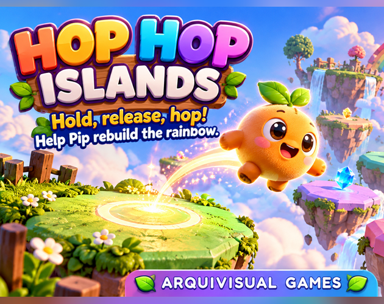
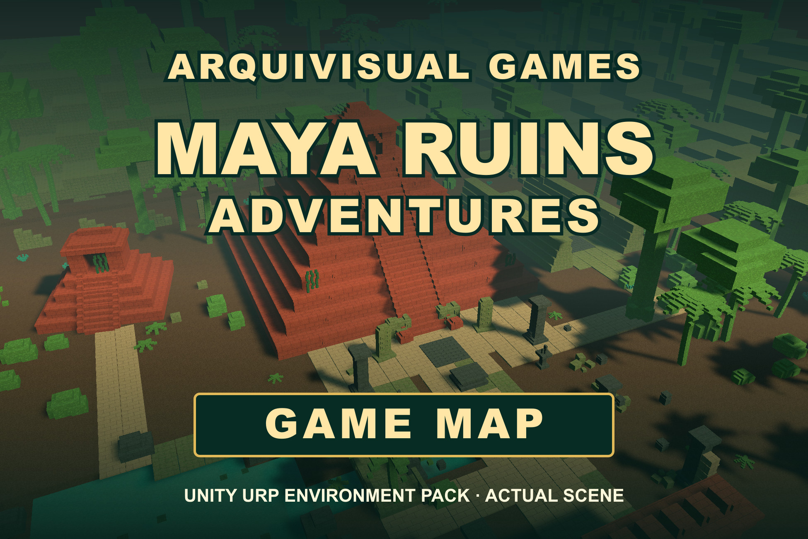

Actualizaciones
Stack & Drift Arena: jugá la versión de CrazyGames
El juego de conducción y carga del estudio ya tiene un acceso directo a su pre-release en CrazyGames.
Leer novedad →Desde el estudio
Seguí nuestros juegos, próximos recursos y avances confirmados.
Actualizaciones
El juego de conducción y carga del estudio ya tiene un acceso directo a su pre-release en CrazyGames.
Leer novedad →
Juegos didácticos
Preguntas en español, cinco categorías y una partida a tu ritmo.
Leer novedad →
Juegos
Conocé la aventura de plataformas y encontrá el acceso a la versión de itch.io.
Leer novedad →
Mini videojuegos
Islas flotantes, saltos cargados y un arcoíris por reconstruir.
Leer novedad →
Unity
Conocé Neon Extraction Game System y Maya Ruins Adventures – Game Map.
Leer novedad →